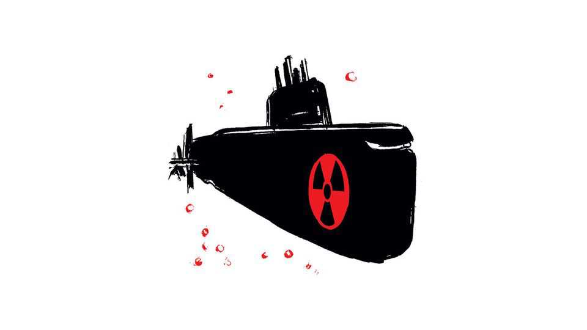
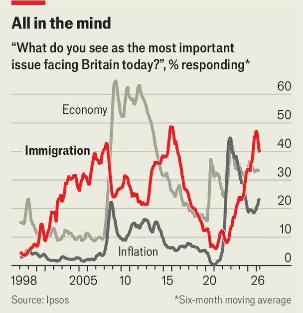

这应让外部观察者深思。阿比总理的国际声望在提格雷战争期间大幅下滑，但近期有所回升。美国和欧盟都寻求更紧密的联系，认为埃塞俄比亚体量太大，阿比总理的重要性不容忽视。然而，此前西方的纵容帮助总理巩固了权威，并使他敢于发动战争。外部势力因此应利用剩余的影响力——尤其是贸易和投资的承诺——引导阿比总理走向更安全的方向。毕竟，埃塞俄比亚的历史教训表明，不受约束的君主终将自取灭亡。■ Subscribers to The Economist can sign up to our Opinion newsletter, which brings together the best of our leaders, columns, guest essays and reader correspondence.
§005东亚应如何应对“中国冲击”
原题：How East Asia should respond to its China shock · 板块：Leaders · 栏目：领导人
我凿穿混凝土作为门，并建造窗户以欣赏Emigrant Peak的壮丽景色。许多“准备者”谴责我破坏这座完美的地堡，但生存专家认为此类结构无法在末日事件中实现长期生存。Dean Andersen 蒙大拿州帕拉迪斯谷（Paradise Valley, Montana）

您详细描述了美国潜艇舰队在海底的主导地位（“Which navy’s better, down where it’s wetter?”, 5月9日）。这种优势很大程度上归功于一人——海军上将海曼·里科弗（Hyman Rickover）。作为早期核动力推进技术的倡导者，里科弗绕过多层上级军官，获得批准启动后来成为“USS Nautilus”（世界上首艘核动力潜艇）的项目。他的标准极为严苛。■
当潜艇指挥官抱怨外部承包商的维修质量时，里科弗（Hyman G. Rickover）向所有承包商发出通知，要求他们的整个高级管理层在潜艇完成维修后首次下潜时必须全部在舰上。他服役63年，至今仍是美国武装部队中任职时间最长的成员。——保罗·施里纳，爱荷华州安肯尼
几乎确定无疑的概率是93%。大概率是75%。可能性为50%。大概不会发生的是30%。几乎不可能的是7%。完全不可能是0%。数学物理学家开尔文勋爵曾说，当你无法用数字表达一个主题时，“你对它的了解是贫乏且令人不满的。”彼得·廷格利（Peter Tingling）西蒙菲莎大学（Simon Fraser University）比蒂学校（Beedie School of Business）副教授温哥华■
§009东南亚大陆自由派领导人重塑体制
原题：Llliberal leaders in mainland South-East Asia revamp their regimes · 板块：Asia · 栏目：亚洲
4月29日，路易斯安那州诉卡莱斯案（Louisiana v Callais）成为最清晰的例子。法院推翻了对1982年投票权法案（VRA）修正案的40年解读。保守派多数意见以6比3裁定，对选区地图的挑战不仅需要证明存在种族歧视效果，还必须提供强有力的证据证明存在故意歧视。该裁决立即引发党派后果，使创建多数非裔选区变得更加困难，但同时允许两党继续推行党派性选区划分。六位保守派大法官还同意加快法律程序，允许路易斯安那州和阿拉巴马州进行选区重划，尽管法院通常不愿在选举临近时修改规则。左翼对路易斯安那州诉卡莱斯案的裁决表示愤怒。大法官艾琳娜·卡根（Elena Kagan）的反对意见称该裁决是投票权法案的“彻底终结”。■
蒂利斯在不到24小时后宣布退休，此前他因投票反对特朗普的“大美法案”（Big Beautiful Bill）而遭到后者怒斥。他与那些来自重视政治独立州的温和派议员共同组成了一种“临时性议会党团”（YOLO caucus）。无论因退休而获得自由，还是因地方政治而免受干扰，他们已不再畏惧特朗普的“MAGA选民”（Make America Great Again），不再盲目顺从。鉴于共和党在国会的微弱多数，只需少数议员倒戈，特朗普的议程就可能陷入停滞。蒂利斯长期是特朗普的麻烦制造者，早在多起高调议题上就与特朗普分道扬镳，包括移民政策、对乌克兰的援助以及政府开支。他最近还阻挠了特朗普提名的美联储主席人选确认程序，直到一项带有政治动机的调查被撤销。■
记者问特朗普是否感到失去对参议院共和党人的控制，他回答：“我真的不知道。”无论如何，党内叛乱可能很快就会结束。许多“YOLO caucus”成员很可能会被更忠于总统的政客取代。但一月也可能带来民主党掌控国会的局面。这是特朗普难以承受的时间。■ 保持对美国政治的了解，订阅我们的每日简报《The US in brief》，获取最重要的政治新闻快速分析，以及每周简报《Checks and Balance》，探讨美国民主状况和选民关心的问题。
§021特朗普政府限制合法移民的大动作 美国 离开（或许）返回
原题：The Trump administration’s big move to limit legal immigration · 板块：United States · 栏目：美国
超过50万白人南非人过去二十年间移居海外。但很少有人预料到，相关法律可能允许他们申请难民身份。如今他们却可以这么做。“你不需要撒谎编造故事，”另一位近期抵达美国的移民梅丽莎（非真实姓名）说。她还补充道，也可以援引对“未来迫害”的担忧。据一位个案处理人员所言，阿非利卡人（Afrikaners）呈现出一种新的“modality”——这是NGO术语，意指新出现的问题，例如宠物是否也能一同迁徙。他们通常精通英语和脸书，常在平台上抱怨美国社会安全网的薄弱。“安置机构对重新安置难民的期望管理早已不是新鲜事，”教会世界服务（Church World Service）安置机构的埃罗尔·凯基奇（Erol Kekic）表示，“但期望有期望，也有另一种期望。”■
保持对美国政治的敏锐洞察，订阅《经济学人》每日简报“The US in brief”，获取对最重要政治新闻的快速分析，以及每周专栏“Checks and Balance”，深入探讨美国民主现状及影响选民的关键议题。■
§023洛杉矶人愤怒到足以选民意党派市长吗
原题：Are Angelenos angry enough to elect an insurgent as mayor? · 板块：United States · 栏目：美国
斯宾塞·普拉特（Spencer Pratt）一直对反派角色着迷。至少，这是他回忆录《你爱恨的那个人：真人秀反派自白录》（The Guy You Loved to Hate: Confessions From a Reality TV Villain）中的说法。美国千禧一代会记得普拉特（如图）是真人秀节目《山间小屋》（The Hills）中的坏男友，该节目从2006年到2010年播出，为八卦杂志提供了无数素材。他在书中说：“《西方坏女巫》？我喜欢这种女人。”汉尼拔·莱克特（Hannibal Lecter）？“我们还在引用这位优雅的、爱吃肝脏的混蛋。”斯宾塞·普拉特并非文学天才。
拉曼是一名城市规划师，财政鹰派，对公共部门工会的大涨持怀疑态度，同时是支持住房建设的YIMBY。她说：“人们常说洛杉矶市长权力薄弱，但其实这是有意削弱的市长职位。因为这位市长没有选择运用她的权力推动我们前进。” 有人倾向于认为普拉特和拉曼在争夺不同的选民：普拉特争取温和派民主党人，而拉曼则在争取被 Rae Huang 这位DSA候选人吸引的左翼选民（后者民调支持率较低）。但洛杉矶的困境正在搅乱政治派系。最近在市中心举行的“支持Nithya的同性恋群体”活动中，38岁的阿古斯丁·哈拉米略希望向拉曼展示一段视频，视频中一位无家可归者住在他的街区，对邻居大喊大叫，身上还带着开放性伤口。他仍在权衡拉曼与普拉特之间的选择，想听听拉曼会怎么做。但他最终也没见到她。■
保持对美国政治的最新掌握，订阅我们的每日简报《美国简报》，该简报对最重要的政治新闻进行快速分析；以及每周简报《Checks and Balance》，深入探讨美国民主的现状及影响选民的议题。■
§024为什么埃隆·马斯克不能在政治领域取得他在工业领域那样的成就
原题：Why can’t Elon Musk do for politics what he’s done for industry? · 板块：United States · 栏目：美国
3月16日，古巴政权宣布将允许海外古巴人（Cubans living abroad）在古巴全资拥有企业。《经济学人》未能找到任何计划接受这一提议的人。但特朗普的一位朋友却表示愿意尝试。5月18日，德克萨斯州亿万富翁雷·沃辛伯恩（Ray Washburne）提出收购Sherritt公司（该公司后来同意）。总统的富裕朋友无法仅凭自身之力复兴古巴被摧毁的经济。■ 注册订阅El Boletín，我们的专属拉丁美洲简报，以了解塑造这一迷人而复杂的地区的各种力量。
§027哥伦比亚关键且分裂的选举已难分胜负 《美洲》
原题：Colombia’s pivotal, polarised election could not be tighter · 板块：Americas · 栏目：美洲
身着虎装的男子们从未停止高呼支持。舞台上，身披充气虎爪和火花喷射装置，阿贝尔多·德·拉·埃斯皮里拉（见图）——这位右翼强硬派哥伦比亚总统候选人自封为“老虎”（El Tigre）——身穿防弹背心，在防弹玻璃后蹦跳着，咧嘴大笑，向观众行礼并怒吼他的口号：“为祖国而坚强”（Firme por la patria）。而在伊万·塞佩达（Iván Cepeda）的竞选集会上，标准道具则是他的演讲稿，他戴着眼镜逐字朗读。
他的胡须精心打理，呈现出纳伊布·布克勒（Nayib Bukele）标志性的风格，这位萨尔瓦多独裁者通过拘押该国8%的年轻男性，成功打击了帮派势力。该国凶杀率骤降，赢得了拉美地区大量粉丝。德·拉·埃斯皮利亚（Mr de la Espriella）称哥伦比亚正经历“安全危机的流行病”。他承诺将在丛林中建设十座私营大型监狱，“效仿布克勒总统的模式”。他表示，“可能需要宣布紧急状态”，这是宪法赋予总统和武装部队广泛权力的临时举措。他提到可能对帮派成员进行大规模审判；更长时间的无审判拘押或许需要重新审视。他表示所有行动都将依法进行。“我是民主人士，”他坚持道，语气颇为尖锐。他已起诉超过100名记者诽谤。
原题：Itamar Ben-Gvir has presided over horrific abuse in Israel’s prisons · 板块：Middle East & Africa · 栏目：中东与非洲
“欢迎来到以色列！我们是这里的主人！”以特玛·本-吉夫在5月20日访问以色列地中海沿岸的阿什杜德港时高呼。当时他正在鼓励手下对被押送至港口的活动人士施以虐待，这些活动人士被绑住并被迫跪地，此前他们被扣留在驶向加沙的船只上。这段视频并未被泄露给媒体：本-吉夫本人自豪地发布了这段视频。对于极右翼犹太力量党（Jewish Power party）的领导人而言，这不过是竞选活动中的又一站。 ■
但他仍是2022年内塔尼亚胡重返权力的关键政党联盟成员。他要求获得国家安全职位作为回报，承诺对被指控从事恐怖活动的巴勒斯坦囚犯施加更严厉的条件。在2023年10月7日哈马斯袭击以色列事件后，他兑现了承诺。囚犯的牢房被剥夺家具，伙食被削减至以色列最高法院认定“不足以维持基本生存水平”的程度。他们遭受殴打，被剥夺医疗救治和律师及红十字会的探视权利。据以色列组织“人权医生组织”（Physicians for Human Rights）统计，加沙战争前两年至少有98名巴勒斯坦囚犯死亡。被释放的囚犯明显消瘦。恶化条件已得到充分记录，尤其是本-古里安本人的报告。■
明年两轮制总统选举中，埃马纽埃尔·马克龙将无法参选，目前没有任何民调显示让-吕克·梅朗雄能赢得选举。但若他能进入第二轮投票，很可能会与极右翼候选人——玛丽娜·勒庞或乔丹·巴德拉——对决，从而提升他们的胜选机会。梅朗雄是一位擅长竞选的政客，常与民调结果相左。2022年，他在最后阶段实现反超，却仅以微弱差距败给勒庞，未能进入第二轮。为何法国民粹左翼仍具有顽强吸引力？一方面，马克思主义思想在法国仍具持久魅力，直至20世纪70年代，左翼仍由共产党主导；另一方面，法国的叛逆历史也为其提供了土壤。法国不屈法国（La France Insoumise）的革命话语在某些群体中颇受欢迎。■
原题：Immigration remains at the forefront of British voters’ minds · 板块：Britain · 栏目：英国
“我们的资源被他们占用了”，海伍德的乔西说。“人们不断涌入，我们根本不知道他们是谁，做过什么”，伯里的埃德表示。“给他们提供酒店，这毫无意义”，格拉夫舍姆的凯蒂说道。这些是近期由民调机构More In Common为《经济学人》开展的右翼选民焦点小组讨论中，受访者对移民问题的典型回应。尽管近年来移民数量迅速下降，但这一议题仍牢牢占据选民关注的中心位置。
■

Ipsos另一家民调机构每月都会向成年受访者进行抽样调查，询问“英国当前面临的最重要议题是什么”。今年5月，41%的受访者选择“移民”作为首要问题，比第二位提及的“经济”高出七个百分点。More In Common的类似民调则将“生活成本”列为首要问题，但过去一年公众对移民问题的担忧上升了五个百分点。政府已采取行动，但选民仍不满意。为何？公众的不满情绪早在工党执政之前就已存在。根据英国智库British Future自2015年起发布的“移民态度追踪”报告，仅15%的英国人表示对政府处理移民问题的方式感到满意，这一数字从未超过20%。
“More In Common”调查机构邀请公众代表勾选所有在脑海中浮现的“移民”群体。仅有29%选择了“来学习的人”，3、8%选择了“来工作的人员”。相比之下，62%选择了“乘坐小船入境的人”，59%勾选了“寻求庇护者”。英国未来（British Future）的苏纳尔·卡特瓦拉（Sunder Katwala）指出，当人们思考自己喜欢和不喜欢的群体时，会形成四个刻板印象：在医院工作的医生和护士（正面）；最初持怀疑态度但如今被接受的波兰水管工；因战争逃离的乌克兰人（正面）；以及乘坐小船穿越英吉利海峡的男性（负面）。工党宣言承诺要“击溃”那些将人通过小船运送到英吉利海峡的犯罪团伙。
更广泛地说，认为移民削弱英国文化的人所占比例已从约八分之一上升至近三分之一。在改革党选民中，这一比例接近三分之二。尽管如此，大多数英国人，包括焦点小组中的成员，只要移民“可控”，仍对移民持开放态度。若具体询问某些职业，多数人表示欢迎更多医生、护士、工程师和采摘水果的工人进入英国。然而，正如俗语所说，信任来得容易，去得难。人们不太可能在一夜之间察觉移民数量的急剧下降，但对2021-24年突如其来的移民激增，他们将在未来多年持续讨论。■ For more expert analysis of the biggest stories in Britain, sign up to Blighty, our weekly subscriber-only newsletter.
§040Alloyed shows how Britain hopes to make things in the future
原题：Alloyed shows how Britain hopes to make things in the future · 板块：Britain · 栏目：英国
数个欧盟成员国，包括比利时和丹麦，比英国更严格地坚持要求人们在抵达前必须获得工作，同时阻止即时发放福利。许多英国人现在抱怨失去在欧盟内自由流动的权利。而移民数量本身已大幅下降。由亲欧盟团体“英国利益”（Best for Britain）最新民调显示，63%的受访者支持人员自由流动原则，22%持反对意见（见图表）。对于工党、绿党及自由民主党选民，支持率上升至90%，但保守党及改革党选民则更为谨慎。一位更果敢的工党首相或许会避开逆转脱欧的政治挑战，转而以人员自由流动换取更全面的单一市场准入，效仿瑞士模式。■ 了解更多英国重大新闻的专家分析，请订阅我们的周报Blighty。
§043英国从福利国家到游乐场国家的转变
原题：How the Treat conquered politics · 板块：Britain · 栏目：英国
自由民主党人质问：“财政大臣为何不早点这么做？”一名工党议员邀请里斯女士试乘阿维基蒂（Avikiti），这是一项耗资900万英镑的新型陀螺旋转游乐设施，位于英格兰西北部海滨度假胜地布莱克浦。里斯女士成为最新一位向英国政治中最具影响力的“特惠”（Treat）低头的政客。这场“特惠”崛起始于保守党执政时期。在2020年代的冲击中，政府不仅支付民众工资和能源账单，还采取了更微妙却意义重大的举措：为所有人提供午餐。通过“外出就餐助你”（Eat Out To Help Out）计划，政府以50%折扣鼓励民众重返餐厅。发放现金是政府日常事务，但午餐？这是一次全新尝试；这便是“特惠”的开端。它标志着国家从福利国家向游乐场国家的奇特演变。■
经济现实远不及英国人的感受重要。英国人的感受取决于“Treats”——即那些小确幸。在焦点小组中倾听人们抱怨，他们哀叹的正是这些小奢侈的消失：这里是一顿炸鱼薯条，那里是一场电影之旅——民调机构More In Common的卢克·特里尔指出。即便对能源价格上涨的愤怒——预计7月将上涨13%——也最好从这些价格上涨如何影响“Treats”来理解。尽管能源成本高昂，但真正陷入“吃饭或取暖”困境的人并不多。他们远不及“取暖或享受”人群。正是这种“Treat economy”（小确幸经济）勉强维系着英国的繁华街道。■
至少目前来看，一切似乎都朝着他的方向发展。莫迪领导的印度人民党（Bharatiya Janata Party）在西孟加拉邦（West Bengal）——印度人口最多的州之一——最近举行的选举中获胜，意味着新的基建项目可能即将流向阿达尼（Mr Adani）。这位擅长脱困的高手恰逢其时地摆脱了困境。■ 要追踪塑造商业、工业和技术趋势的动态，订阅我们的周度会员专属简报“ The Bottom Line ”。
§047世界最大避孕套制造商面临压力
原题：The world’s top condom-maker is getting squeezed · 板块：Business · 栏目：商业
雇主希望员工利用AI提升生产力，应对使用AI的竞争对手，甚至更多。员工整体上则较为冷淡。他们能看到这项技术的一些好处，但也清楚它对工作带来的风险。尽管目前尚无大规模裁员的数据，但对AI的抵制情绪已悄然兴起。这种情绪催生了“FOBO”（Fear of becoming obsolete，恐被淘汰）这一缩写。这种情绪在病毒式视频中表现明显——美国毕业生对毕业典礼演讲者提及AI时发出嘘声，以及一位即将离职的Meta员工以《美国派》（American Pie）的旋律唱出对科技巨头AI战略的告别（“如今我正告别专业自豪感”）。工作不安全感对任何人都不利，对员工的影响尤为负面。
原题：How to tax businesses in orbit and beyond · 板块：Finance & economics · 栏目：财经
1587年，英国法学家爱德华·科克爵士（Sir Edward Coke）推广了法律原则：谁拥有土地，谁就拥有其上方的空间，“直至天堂（及星辰）和地狱”。地狱或许尚远，但星辰最近已变得触手可及。20世纪大部分时间，太空探索是政府主导的公共事务，目标是科学探索。如今，这一领域正逐渐成为私人企业主导的商业活动，充满商业野心的参与者。该行业的领军企业太空探索公司（SpaceX）——埃隆·马斯克即将上市的火箭企业——正计划在火星建立一座城市。 ■
只要风险投资（VC）依然充裕，私募股权二级市场让早期投资者和员工更容易将股份变现而无需IPO，这一趋势恐怕不会改变。数据提供商PitchBook（PitchBook）估计，2026年第一季度，风险投资支持企业的二级交易规模几乎翻倍，达到1120亿美元，首次超过IPO融资额。或许在充满希望的AI新时代，少数巨无霸赢家才是关键。即便这些企业的估值飙升至数百万亿美元，公众市场投资者仍能参与美国的创新活力。然而，若未能达到这一程度，私人市场中的大部分收益将难以触及。■ The Economist订阅者可注册我们的观点通讯，汇集了最佳的社论、专栏、客座评论及读者来信。
§056明日医疗传感器或随晚餐一同登场
原题：Tomorrow’s medical sensors might come served with dinner · 板块：Science & technology · 栏目：科技
吞食电子设备通常不被推荐。但比利时和荷兰（Belgium and the Netherlands）的研究人员已研发出如何让食用电子元件——从无线发射器和微芯片到电池和化学传感器——不仅安全，而且实用。其成果是GISMO（gastrointestinal smart module，胃肠智能模块）：一颗约指甲盖大小的可食用胶囊，可沿人体肠道全程移动，每20秒采集一次化学数据并传送到腰带上的接收器。
每个传感器都需要电力，而目前的胶囊依赖银氧化物传统电池——这种电池适合单次诊断程序，但不太适合对数百万慢性病患者进行常规监测。进入人体的电池最终必须作为电子垃圾被排出体外。它也往往是胶囊体积最大的部分，限制了微型化程度。提出的解决方案令人联想到威利·旺卡（Willy Wonka）的创意：电子食品。意大利热那亚理工研究所（Italian Institute of Technology in Genoa）的研究人员在欧洲研究理事会（European Research Council）资助的ELFO（Electronic Food）项目下，致力于寻找可作为电子元件的食品衍生材料。■
与船员的社交互动并未带来帮助——近距离互动反而与群体冲突评分降低和更严重的偏执倾向相关。随着时间推移，这些极地探险者也逐渐按国籍聚集。在常规组织中，与同事更多接触通常对身心健康有益。“但在这种封闭环境中，情况恰恰相反，”研究作者简·施穆茨（Jan Schmutz）解释道。施穆茨博士认为，差异可能源于缺乏隐私。“人类是高度社交的生物，但也有界限。”尽管南极研究人员在前往南半球前会接受心理评估，但仍存在紧张关系激化的案例。今年早些时候，一名韩国研究人员因用自制刀具威胁同事，被从江布尔戈研究站（Jang Bogo Research Station）撤离。
一只手涂抹了DEET，另一只则未做处理。令他们沮丧的是，他们目睹了60%的蚊子在接触血液或糖水时被DEET暴露的那只手吸引（并叮咬）。相比之下，所有接受普通空气训练的蚊子都完全避开了DEET。本周发表于《Journal of Experimental Biology》的拉扎里博士（Dr Lazzari）实验室研究显示，这种条件反射对蚊子形成对DEET的偏好至关重要。但现实世界中很可能正上演着类似的情景，因为DEET的效果通常会随时间减弱，尤其在人们出汗或最初使用不足的情况下。■
2023年，Authentic公司推出了自己的制作工作室，并参与制作了近期上映的电影《EPiC: Elvis Presley in Concert》，该片由巴兹·鲁赫曼（Baz Luhrmann）执导。正如Authentic公司负责人杰米·萨尔特（Jamie Salter）所言，最成功的文化机构不仅关注“保存过去”，更致力于“参与文化”。它们也着眼于未来。尤其值得注意的是，企业正探索利用人工智能和全息影像技术，让已故明星重现于现场巡演和粉丝体验中。2024年，Authentic公司与人工智能企业Soul Machines合作，打造了一位“数字玛丽莲·梦露”，该虚拟形象被描述为“真实且富有互动性”。这位数字人佩戴着梦露标志性的红唇，频繁使用“亲爱的”这一称呼。然而，人工智能也使得他人更易利用明星的肖像与声音。如今，甚至一名在卧室里学习的学生也能制作出看起来或听起来像明星的卡通形象。■
思维模式意味着调和约翰·梅纳德·凯恩斯（John Maynard Keynes）的社会模式与约瑟夫·熊彼特（Joseph Schumpeter）的创造性破坏理论。这并非自相矛盾：瑞典、丹麦和荷兰是欧洲最具创新性的国家之一，同时这些国家的不平等程度也处于欧洲最低水平。至于治理模式，确实民主协商需要时间，但为何欧盟委员会一项提案到议会投票必须耗费三年？为何进步总要等待所有27个成员国？欧元本身——最初由11个国家采用，如今已为21个国家使用——证明了在强机构如欧洲央行（European Central Bank）的支撑下，分阶段推进整合、在所有国家准备就绪前实现突破是可行的。■
近35年后的今天，欧洲仍需一个像德尔奥尔（Delors）那样的动员日期——效仿前欧盟委员会主席德尔奥尔的“1992年目标”单一市场推动行动——以实现经济与金融主权。为何不将目标定为2029年1月1日，即欧元诞生30周年？这样一个时间节点或许能将“特朗普时代”的挑战转化为黄金机遇。■ 弗朗索瓦·维勒鲁瓦·德·加尔豪（François Villeroy de Galhau）自2015年起担任法国央行行长，将于2023年6月卸任。他自2022年起担任国际清算银行董事会主席。
§067现代战争的危险幻觉 文章 世界战争
原题：The dangerous delusion of modern warfare Essay · 板块：其它 · 栏目：其它
技术变革是否让防御者的角色变得更容易？还是系统性地鼓励大国发动无法取胜的战争？抑或这不过是大国误入不智战争的常态——这些战争反映着当时主流的技术水平？这个问题至关重要，因为战争已成为一个蓬勃发展的产业。乌普萨拉冲突数据计划（Uppsala Conflict Data Programme）记录显示，2025年有65起以国家为一方的冲突——即至少有一方为国家且每年造成至少25例战斗相关死亡的战争——这是自该机构1946年开始记录以来的最高水平。这些冲突包括8起被归类为国家对国家的战争，其中2起年战斗死亡人数超过1000人。■
在去年一次面向中国军事学员的演讲中，时任英国国防参谋长托尼·拉迪金男爵（Admiral Sir Tony Radakin）表示，英国的战争方式本就与乌克兰战场截然不同：其模式将效仿“2024年以色列对伊朗的袭击”，即“在单夜内通过远程、非接触式武器，结合精准打击和第五代技术，彻底摧毁了伊朗全部防空系统”。但军队往往难以获得他们所期望的战争。托尼男爵几乎可以肯定，在北约与俄罗斯之间爆发战争时，联盟将建立某种形式的制空权（前提是美国承诺投入战斗）。那么接下来呢？奥地利军事专家弗朗茨-斯蒂芬·加迪（Franz-Stefan Gady）指出，制空权不仅更难建立和维持，其带来的优势也远不如从前。
训练是尝试在实战前培养此类战术的一种方式。但尽管至关重要，它也从不足够。比德尔先生表示，他最近在加利福尼亚莫哈维沙漠的福尔特·艾尔文（Fort Irwin）观察到的美军国家训练中心（National Training Centre）装备精良的旅级部队仍存在“系统性缺陷”。该部队过于专注于机械化作战技能（被认为已退化），导致其应对反无人机战等新威胁时“思维带宽”严重不足。指挥所、后勤站点和防空系统均存在致命暴露风险。最好的学习方式是向实际操作者学习。乌克兰观察员对欧洲军队而言是宝贵资源，乌克兰老兵同样如此。去年的“海胆”（Hedgehog）演习中，乌克兰无人机操作员协助北约测试保护爱沙尼亚的防御计划。瑞典今年的“极光”（Aurora）演习也采取了类似做法。■
他们承诺打造“混合型”军队和舰队，其中无人和机器人系统将与传统坦克、飞机或舰船协同作战。但实际情况并非如此。美国二星将军马特·范·瓦根恩（Matt Van Wagenen）最近卸任北约主要军事指挥机构作战副参谋长一职后感叹道：“我认为我们正在沿着投资昨日技术的路径前进。”他指出，北约的国防规划流程——决定采购什么——仍基于几十年前的老旧技术。“在高度透明的战场上，一辆77吨重的战斗车辆每12小时消耗500加仑燃料”是不明智的，他指出。“未来的作战编队将高度依赖无人系统。”这或许言过其实。■
伊朗的失败表明，聪明的防御者，尤其是那些幸运地居住在拥有众多崎岖地形的大型国家的人，即使面对全球最先进的两支空军，也能在数月内隐藏起威力巨大的武器。一种应对方式是推动技术发展——创造如此全面的态势感知，以至于发射器刚一离开藏身之处就能被发现；构建如此畅通的“杀伤链”，让数据流动毫无阻碍，从而实现瞬间打击。历史学家劳伦斯·弗里德曼（Sir Lawrence Freedman）指出，一些军事思想家对“一击必胜”理念有着长期执着。20世纪的空军力量倡导者曾频繁提出这类设想，但成功案例却寥寥无几。显然仍有改进空间。■
创业者们将FPV拍摄的视频——记录下被逼到绝境的俄乌士兵惊恐或绝望的面容——剪辑成配以重金属音乐的虐杀电影。战斗正日益演变为定制化的远程操控处决。美国陆军训练与条令司令部（US Army’s Training and Doctrine Command）曾特别指出的一段FPV视频中，一名俄罗斯士兵被乌克兰无人机逼近时，向身旁躺在战壕里的战友比划示意：杀掉他。无人机傲慢地暂停行动，随后向第二名士兵投掷手雷，将其头颅炸飞。接着它返回第一人，重复同样的动作。这场交火令人毛骨悚然，但未必违法。两名士兵显然并未处于非战斗人员状态。官员表示公众普遍认为战争规则远比实际更严格。若哈马斯在建筑物下挖了地道，炸毁它或许属于合法行为。■